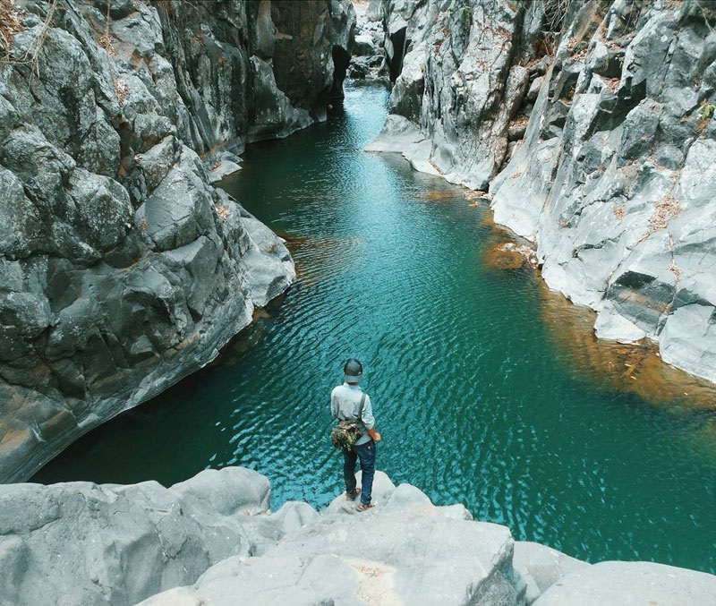
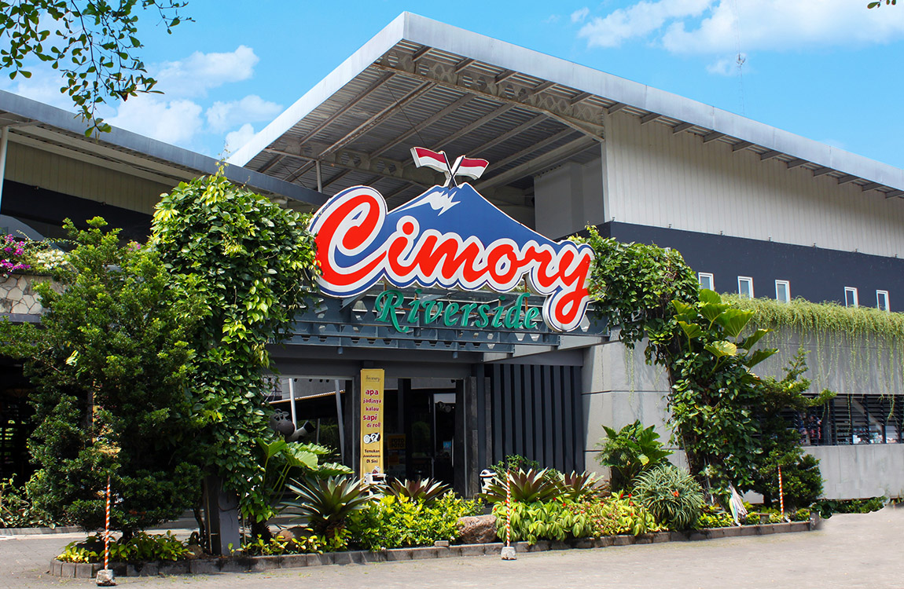
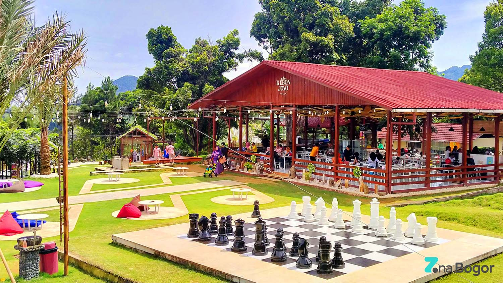
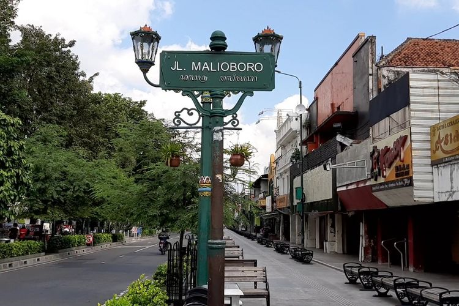

saya mempunyai beberapa pengalaman yang menurut saya itu worth it untuk kalian kunjungi dari mulai
daerah Bogor, Yogyakarta, Tasikmalaya. Selama liburan saya sering kali melakukan
travelling
bersama teman-teman saya. terkadang jika keluarga saya berencana untuk liburan, sayapun ikut liburan
bersama keluarga saya.
dibawah ini merupakan beberapa tempat yang pernah saya kunjungi semasa hidup saya.
BOGOR
adalah sebuah kota yang terletak di provinsi Jawa Barat, Indonesia. Kota ini terletak 59 km di
sebelah selatan Jakarta, dan merupakan enklave Kabupaten Bogor. Pada pertengahan tahun 2022, jumlah
penduduk Kota Bogor sebanyak 1.114.018 jiwa, dengan kepadatan 10.001 jiwa/km².[6]
Kota Bogor dikenal dengan julukan Kota Hujan, karena memiliki curah hujan yang lumayan sangat
tinggi. Kota Bogor terdiri atas 6 kecamatan yang dibagi lagi atas sejumlah 68 kelurahan. Pada masa
Kolonial Belanda, Kota Bogor dikenal dengan nama Buitenzorg yang berarti tanpa kecemasan atau aman
tentram.
Curug Leuwi lieuk

Leuwi Lieuk
terletak di Desa atau kelurahan Pabuaran, Kecamatan Sukamakmur, Kabupaten Bogor, Provinsi Jawa
Barat. kota bogor adalah sebuah kota hujan yang dimana terdapat berbagai destinasi wisata alam
yang indah seperti gunung, camping ground, air terjun dan banyak lagi yang lainnya. wisata
sejarah juga banyak di kota bogor yang menyimpan berbagai macam budaya didalamnya. salah satu
keindahan wisata yang tersebunyi pegunungan sentul selatan adalah Curug Leuwi Lieuk. tempat ini
memiliki saudara yaitu wisata leuwi hejo. selain wisata leuwi lieuk, terdapat juga wisata yang
dekat dari wisata ini yaitu curug barong.
Dairy Land Cimory(Riverside)

Cimory Riverside
Cimory Riverside sebuah restoran atau rumah makan yang terkenal karena wahana, serta view yang di
tawarkan kepada pengunjungnya. Adapun fasilitas adalah penunjang kesempurnaan objek wisata
tersebut.
Fasilitas di objek wisata salah satunya restoran. Kemudian jika kita melihat fenomena
sebaliknya, bahwa sebuah restoranlah yang menyajikan keindahan pemandangan alam, serta ragam
wahana wisata, tentu menjadi hal di luar kebiasaan.
Jika anda belum pernah pergi berkunjung ke puncak Bogor, maka Cimory merupakan spot yang
recommended untuk dikunjungi.
Kebon Joyo

Wisata Kebon Joyo Cafe and Resto Bogor sendiri berlokasi di Jalan Bukit Pelangi,
Kecamatan Sukaraja, Kabupaten Bogor, Jawa Barat.
Cimory Riverside sebuah restoran atau rumah makan yang terkenal karena wahana, serta view
yang di
tawarkan kepada pengunjungnya. Adapun fasilitas adalah penunjang kesempurnaan objek wisata
tersebut.
Fasilitas di objek wisata salah satunya restoran. Kemudian jika kita melihat fenomena
sebaliknya, bahwa sebuah restoranlah yang menyajikan keindahan pemandangan alam, serta ragam
wahana wisata, tentu menjadi hal di luar kebiasaan.
Jika anda belum pernah pergi berkunjung ke puncak Bogor, maka Cimory merupakan spot yang
recommended untuk dikunjungi.
Yogyakarta
Kota Yogyakarta terletak antara 110°24'19"-110°28'53" Bujur Timur dan antara 07°15'24"-07°49'26"
Lintang Selatan, dengan luas sekitar 32,5 Km2 atau 1,02% dari luas wilayah Provinsi Daerah Istimewa
Yogyakarta. Jarak terjauh dari Utara ke Selatan kurang lebih 7,5 Km dan dari Barat ke Timur kurang
lebih 5,6 Km.
Kota Yogyakarta memiliki luas sekitar 32,5 Km2 atau 1,02% dari luas wilayah Provinsi Daerah Istimewa
Yogyakarta. Jarak terjauh dari Utara ke Selatan kurang lebih 7,5 Km dan dari Barat ke Timur kurang
lebih 5,6 Km. Kota Yogyakarta yang terletak di daerah dataran lereng aliran Gunung Merapi memiliki
kemiringan lahan yang relatif datar antara 0 - 2% dan berada pada ketinggian rata-rata 114 meter
dari permukaan air laut (dpa). Sebagian wilayah dengan luas 1.657 hektar terletak pada ketinggian
kurang dari 100 meter dan sisanya pada ketinggian antara 100–199 meter dpa. Sebagian besar jenis
tanahnya adalah regosol.
Malioboro

Jalan Malioboro yang mejadi salah satu destinasi wisata utama di Yogyakarta. Di
sekitar Jalan Malioboro terdapat dua spot baru yaitu Teras Malioboro dan Selasar Malioboro.
Berkunjung ke Malioboro belum afdol tanpa foto di plang Jalan Malioboro. Banyak wisatawan yang
antre untuk berfoto di plang Jalan Malioboro dengan latar belakang jalan dan pertokoan.
Wisatawan bisa menemukan beberapa plang Jalan Malioboro di beberapa titik. Plang berwarna hijau
itu, dilengkapi dengan tulisan warna putih berbunyi Jalan Maliobor dengan huruf alfabet dan
aksara Jawa di bawahnya.
Candi Borobudur
Candi Borobudur
Candi Borobudur memuat 2672 panel relief yang jika disusun berjajar maka panjangnya mencapai 6
km.
Relief Candi Borobudur terbagi menjadi 4 kisah utama, yaitu: Karmawibangga, Lalitawistara,
Jataka/Awadana, serta Gandawyuha. Selain mengisahkan tentang perjalanan hidup Sang Buddha dan
ajarannya, relief Candi Borobudur juga merekam kemajuan masyarakat Jawa pada masa itu.